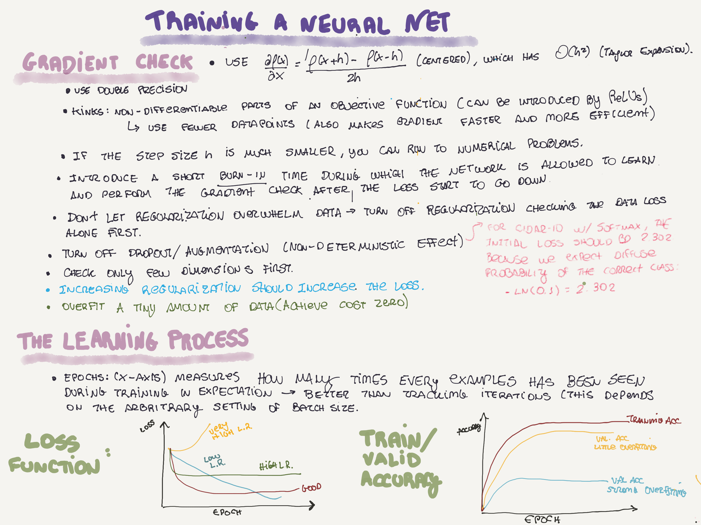
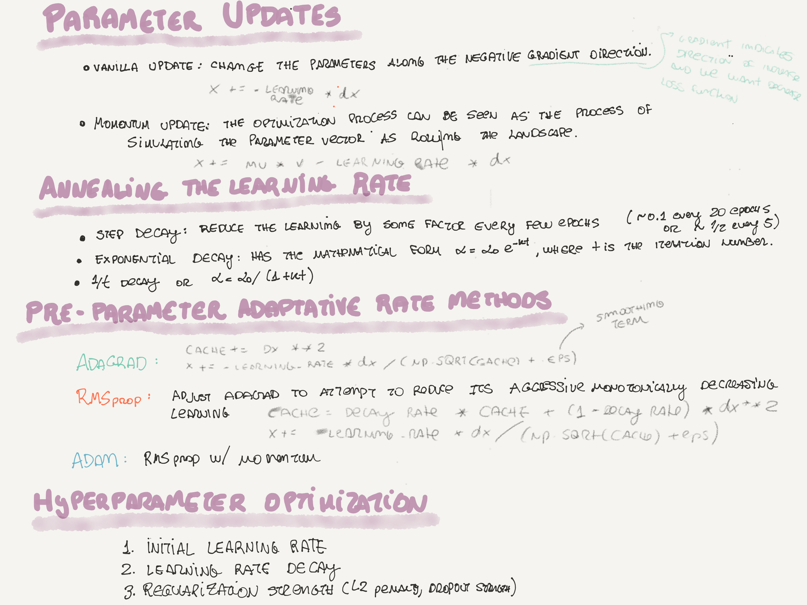
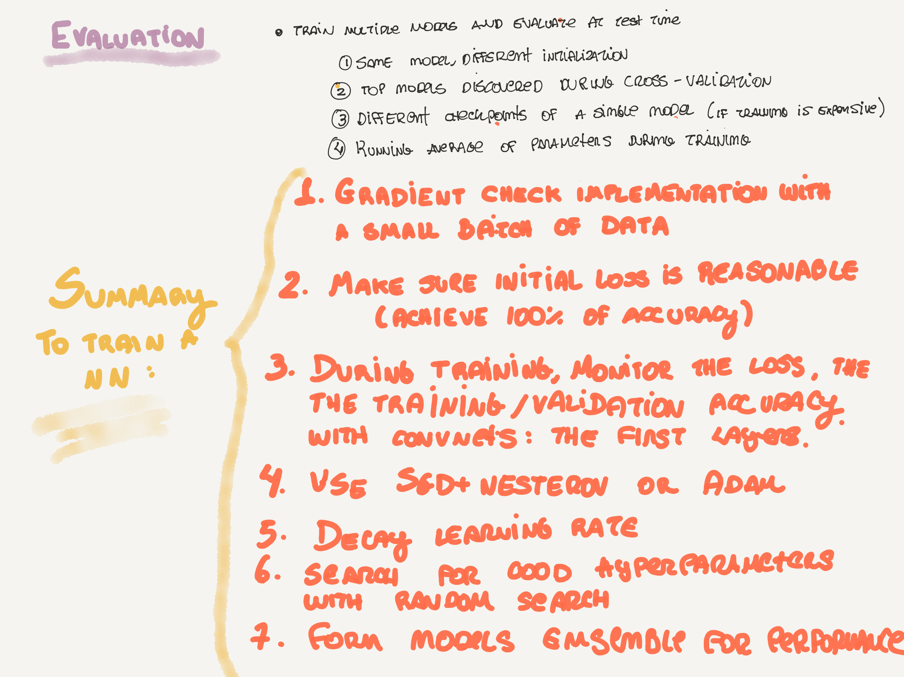

Papers
- Self-Modification of Policy and Utility Function in Rational Agents (Everitt, et. al, 2016).
- WIKIREADING: A Novel Large-scale Language Understanding Task over Wikipedia (Hewlett, et. al, 2016).
- Evaluation of General-Purpose Artificial Intelligence: Why, What & How, (Bieger, et. al, 2016).
- Learning the Curriculum with Bayesian Optimization for Task-Specific Word Representation Learning, (Tsvetkov, et. al, 2016).
- Generalized Transition-based Dependency Parsing via Control Parameters, (Bohnet, et. al, 2016).
- Latent Predictor Networks for Code Generation, (Ling, et. al, 2016).
- Collective Entity Resolution with Multi-Focal Attention, (Globerson, et. al, 2016).
- Globally Normalized Transition-Based Neural Networks, (Andor, et. al, 2016).
- Unethical Research: How to Create a Malevolent Artificial Intelligence, (Pistono, et. al, 2016)).
- Death and Suicide in Universal Artificial Intelligence, (Martin, et. al, 2016).
- Easy Questions First? A Case Study on Curriculum Learning for Question Answering, (Sachan, et. al, 2016).
- Query Expansion with Locally-Trained Word Embeddings (Diaz, et. al, 2016).
- DocChat: An Information Retrieval Approach for Chatbot Engines Using Unstructured Documents, (Yan, et. al, 2016).
- Learning Language Games through Interaction, (Wang, et. al, 2016).
- Generating Natural Questions About an Image, (Mostafazadeh, et. al, 2016).
- Strategies for Training Large Vocabulary Neural Language Models, (Chen, et. al, 2016).
- Andrej Karpathy's papers notes.
News
- AI’s Language Problem. "One reason that understanding language is so difficult for computers and AI systems is that words often have meanings based on context and even the appearance of the letters and words. In the images that accompany this story, several artists demonstrate the use of a variety of visual clues to convey meanings far beyond the actual letters."
- Image Completion with Deep Learning in TensorFlow. Great detailed tutorial using a DCGAN.
- Machine learning and “molecular Tinder” may change the game for OLED screens. Interesting article on how ML on molecules is helping to push the OLED screens industry.
- Deep Learning Chip Upstart Takes GPUs to Task. Nervana System’s pitch, including a comparison of Pascal and Maxwell TitanX.
- Top Myths about Advanced AI from Future of Life Institute. An interesting (and maybe alarmist) review of GAI myths and (maybe) facts.
- Hearing is like seeing for our brains and for machines. Think synesthesia.
- Machine-Learning Algorithm Combs the Darknet for Zero Day Exploits, and Finds Them. "The first machine-based search of online hacker marketplaces identifies over 300 significant cyberthreats every week."
- Exploring Pipelines.
- Cat People, Dog People. Funny post exploring characteristics (features) of "dog people" and "cat people" on Facebook.
- Introducing Variational Autoencoders (in Prose and Code). Good introduction to autocoders.
- Quantum computing center upgrades to focus on AI.
- Google Brain's AMA.
- Recurrent Neural Networks for Beginners.
- The New NVIDIA TITAN X.
- Lab41 Reading Group: Deep Compression.
- Unleashing the Mayhem CRS (DARPA CGC)..
Tools and Apps
- MIT's Moral Machine. "A platform for gathering a human perspective on moral decisions made by machine intelligence".
- A machine learning based social media pen-testing tool.
Conference Slides
Videos
- Drone Dreaming.
- Neural GPU Learned Algorithms.
- AI, Deep Learning, and Machine Learning: A Primer.
- Most robots dancing simultaneously - Guinness World Records.
Fun
- CuratedAI, A literary magazine written by machines, for people.
- William Gibson talks about 'The Peripheral,' the power of Twitter, and his next book set in today's Silicon Valley.
- No Man's Sky is out!.
- Scann-tec - Hope.
  
Comments !